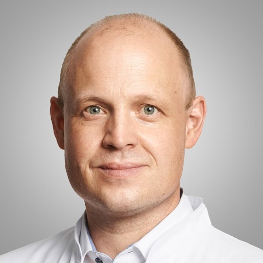
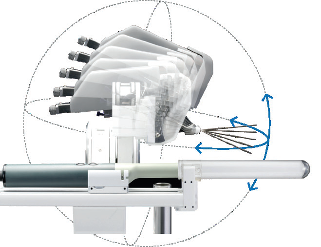

الفهم
وضع الأعراض والوقاية والمخاطر الشخصية في سياقها.
العيادة الخاصة للبروفيسور الدكتور شتيفان كروك قيد التجهيز حالياً. ستُنشر هنا معلومات افتتاح العيادة وحجز المواعيد فور تأكيدها.

تصف المعلومات التالية المجالات الطبية المخطط لها. سيُعلن قبل بدء عمل العيادة عن الخدمات المتاحة عند الافتتاح وأماكن إجراء الفحوص.
Precision Prevention · Executive Health
فحص صحي فردي يشمل تقييم المخاطر والتحاليل والموجات فوق الصوتية مع الوصول إلى تشخيص قلبي متقدم وتصوير بالرنين المغناطيسي عند الحاجة.المزيد ←Precision Urology · Prostate Excellence
من الأعراض والوقاية إلى التصوير الحديث والتقييم الدقيق للنتائج غير الطبيعية واتخاذ قرار علاجي فردي.المزيد ←نجمع بين الاستشارة الطبية والتحاليل والموجات فوق الصوتية، وعند الحاجة الطبية، تشخيص القلب والتصوير بالرنين المغناطيسي ضمن فحص صحي مخصص لكل شخص.
القدر المفيد من التشخيص، وليس أكبر عدد ممكن من الفحوص.
قد تثير أعراض التبول أو ارتفاع PSA أو أي نتيجة غير طبيعية كثيراً من الأسئلة. يجمع PRECURIUM بين خبرة المسالك البولية والموجات فوق الصوتية والتصوير بالرنين المغناطيسي لتفسير النتائج وتخطيط الخطوات التالية بوضوح.
وضع الأعراض والوقاية والمخاطر الشخصية في سياقها.
تشخيص المسالك البولية والموجات فوق الصوتية والتصوير بالرنين المغناطيسي.
متابعة النتائج غير الطبيعية عندما يكون ذلك مفيداً طبياً.
مراجعة النتائج معاً وتحديد المسار العلاجي الأنسب.
تقييم منظم لمشكلات التبول والوظيفة الجنسية وغيرها من الأسئلة المتعلقة بالمسالك البولية.
ربط عوامل الخطر الشخصية بتشخيص بولي حديث.
تقييم تشخيصي وقرار علاجي فردي عند وجود نتائج مشتبهة أو تشخيص مؤكد.
ينتج التصوير بالرنين المغناطيسي الحديث صوراً عالية الدقة، وتأتي قيمتها الطبية من القراءة الاختصاصية وربطها بالسؤال السريري.
عندما تكون الخزعة ضرورية، يمكن لدمج الصور والملاحة الدقيقة أن يساعدا في استهداف المناطق المشتبهة. اختيار التقنية يعتمد دائماً على الوضع الطبي الفردي.

مثال تقني: Biobot MonaLisaخبرة طويلة في تشخيص البروستاتا والتصوير في المسالك البولية والجراحة الروبوتية، مع نشاط علمي وإرشادي في مجال التشخيص واتخاذ القرار العلاجي والحفاظ على الأعضاء.
المهام في الجمعيات العلمية: رئيس قسم المسالك البولية في DEGUM · رئيس مجموعة عمل أنظمة التصوير في DGU.
الحجز الإلكتروني قريباًللأسئلة التنظيمية بشأن افتتاح العيادة المخطط له، يرجى التواصل عبر info@precurium.com. يرجى عدم إرسال تقارير طبية أو أي بيانات صحية أخرى عبر البريد الإلكتروني.
سيتم تفعيل حجز المواعيد إلكترونياً عبر Doctolib بعد اكتمال الإعداد.
محتوى مختصر حول الوقاية والتشخيص والبروستاتا والطب الحديث يكمل الاستشارة الطبية الشخصية.